Step by Step guide to using
TENSET Binance Smart Chain Bridge.
A two-way seamless bridge between ETHER and BSC.

TENSET is excited to release the Binance Smart Chain Bridge,
which marks the inception of ETH in BSC. It allows ETH Token holders to seamlessly bridge their ETH tokens
over to the Binance Smart Chain standard
TENSET Smart Contracts and Bridge Details —
ZEE ERC20 Details —
- ERC20 Bridge Address: Contract
ZEE BEP20 Details —
- BEP20 Bridge Address: Contract
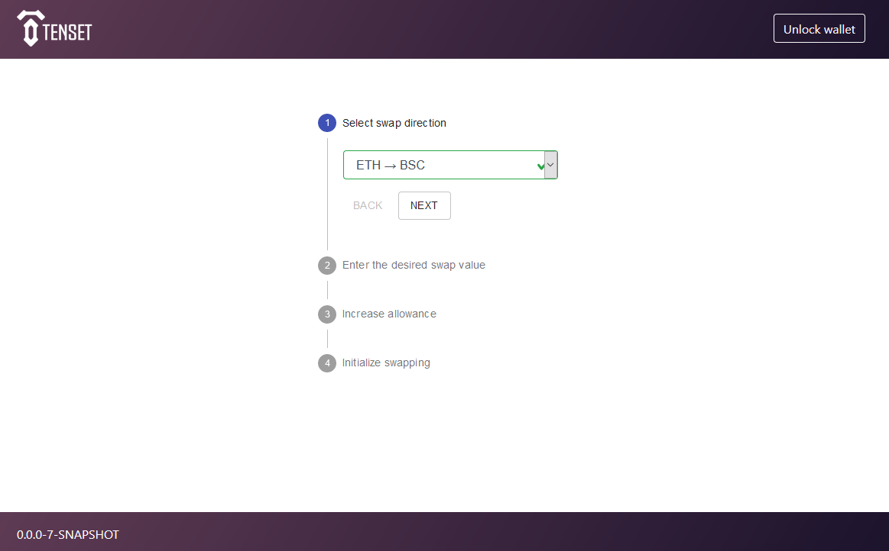
Step 2. Connect your wallet (as of now only metamask browser is supported) Guide to — Use Metamask on Binance Smart Chain
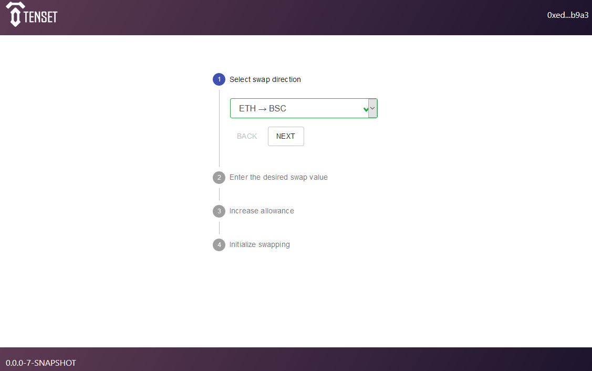
Step 3. Once your Wallet is connected, you can see your balance on Ethereum Mainnet. You would also need to add Binance Smart Chain Network in Metamask manually.
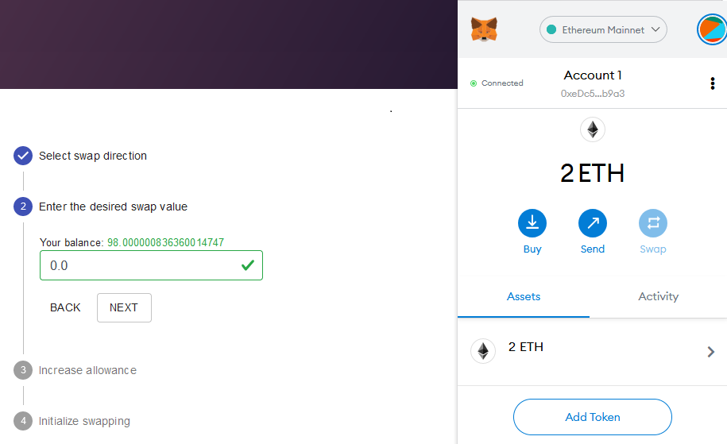
Step 4. Again Click on Meta Mask then select settings.
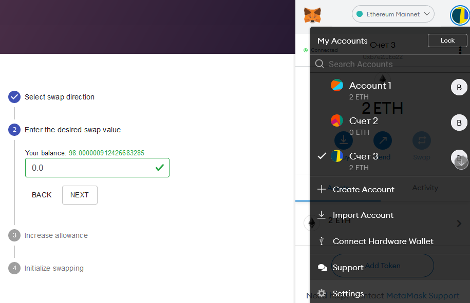
Step 5. Scroll down to network and select network.
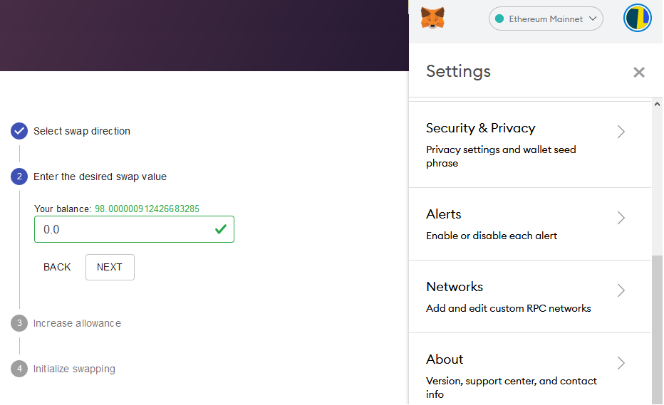
Step 6. Select Add Network.
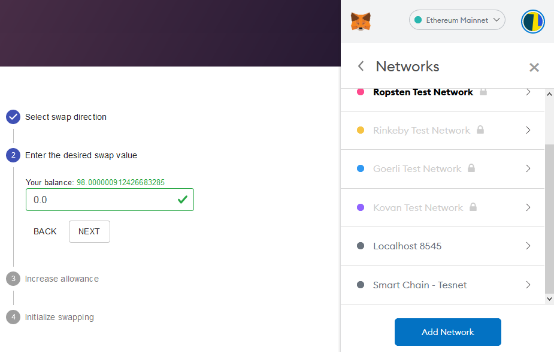
Step 7. Enter the following Details -
1. Network Name — Smart Chain - Tesnet
2. New RPC URL — https://data-seed-prebsc-1-s1.binance/
3. Chain ID — 97
4. Currency symbol — BNB
5. Block Explorer URL — https://www.testnet.bscscan.com
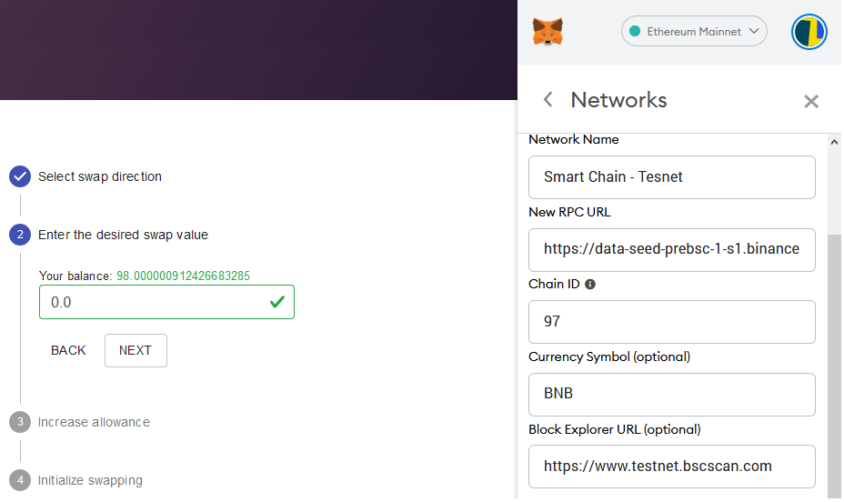
Now you have added BSC network to your Metamask wallet.
Step 8. Steps to Transfer ZEE ERC20 (Ethereum) to ZEE BEP20 (Binance Smart Chain)
1. Enter the desired swap value
2. Click on “Next”
3. Click on “Increase Allowance”
4. Confirm the transaction on Metamask.
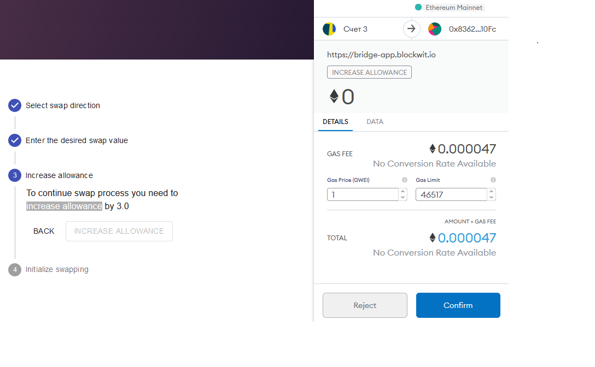
Your transaction has been mined. Please, click "Next" to continue.
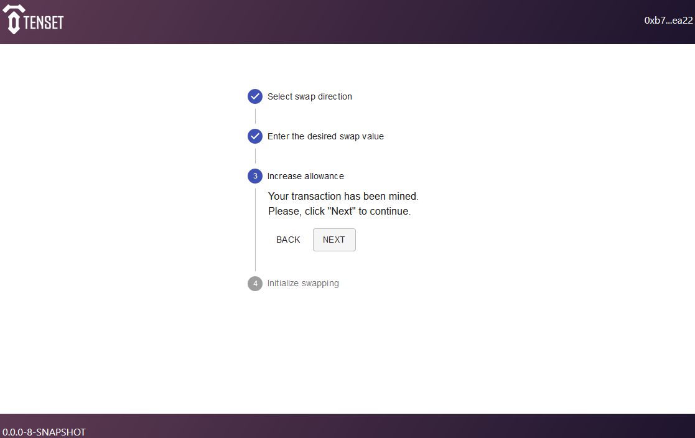
Step 9. Initialize swapping. Click on "Swap"
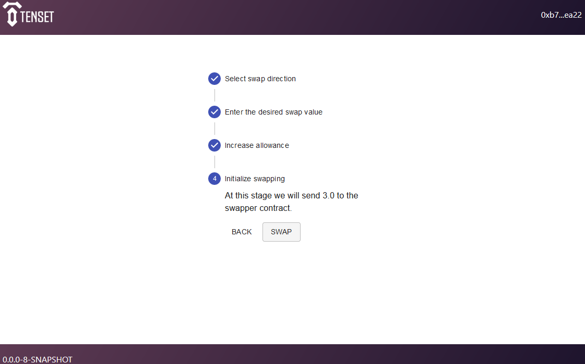
Confirm in MetaMask
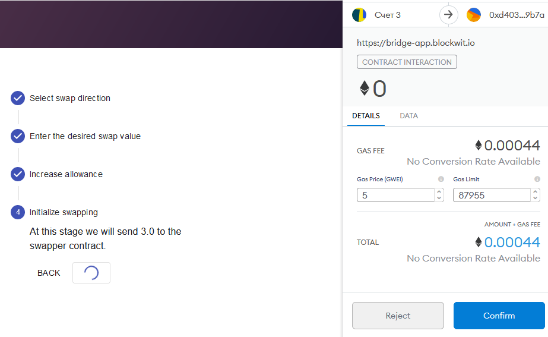
Now your transaction has been sent and now has status 'Pending'. Wait until it is mined. You can watch your transaction on Etherscan.
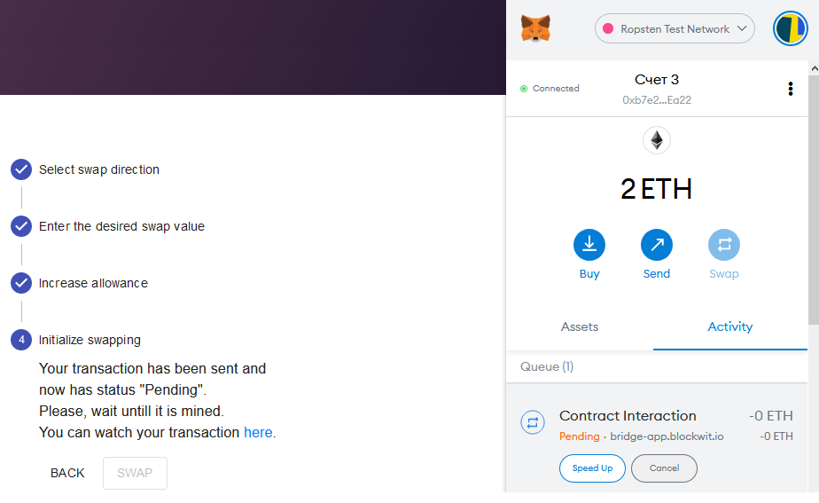
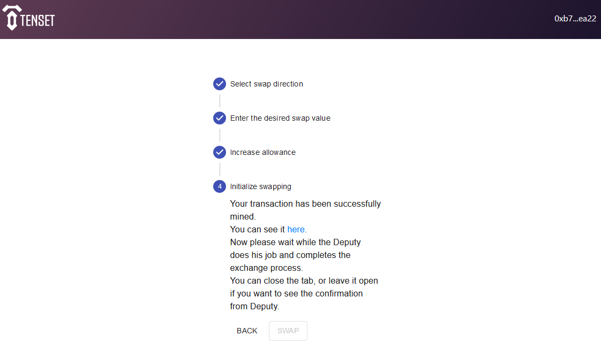
When operation fill be finished, you can check your tokens on MetaMask (Select Network on 'Smart Chain - Testnet') or on https://testnet.bscscan.com
Also you can see your swaped BSC Tokens on Tenset bridge:
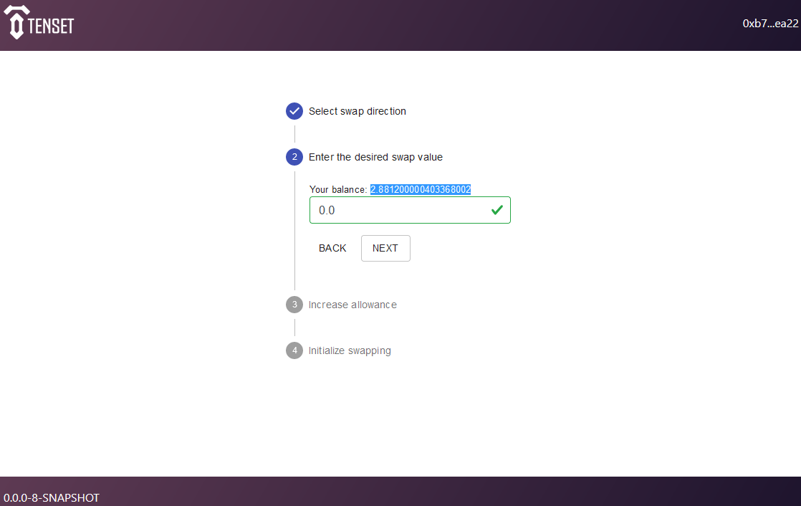
Steps to Transfer BCS to ETH
Step 1. Connect Metamask and Switch to Smart Chain - Testnet
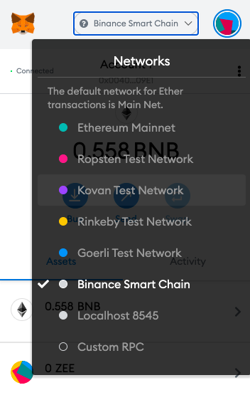
Step 2. Enter the desired swap value on https://bridge-app.blockwit.io
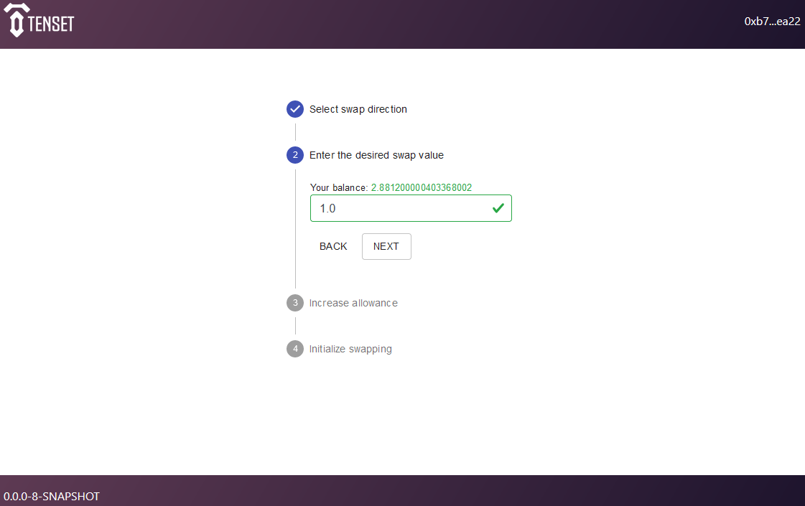
Step 3. Increase allowance
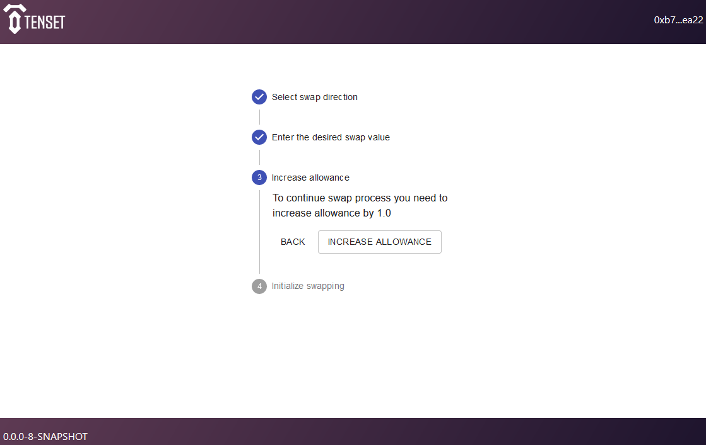
Confirm transaction on MetaMask
Step 4. Switch to Ropsten Test network on Metamask. Now you can see that the tokens have been transferred